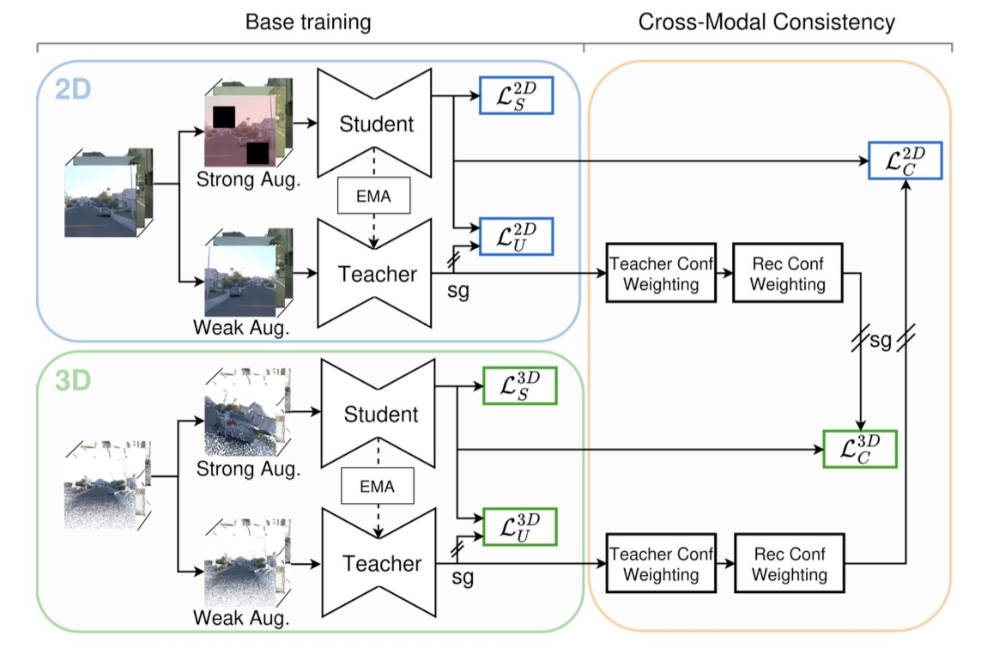
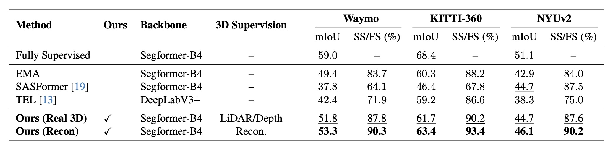
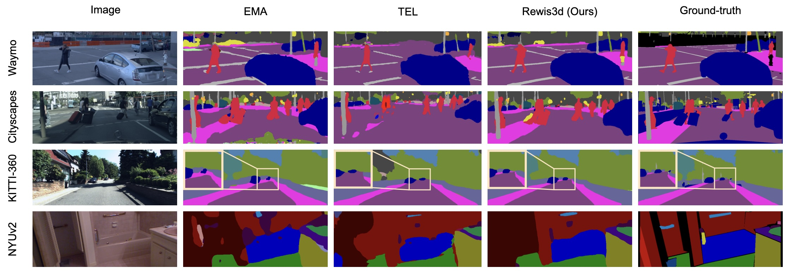

Abstract
Obtaining dense, pixel-level annotations remains a costly bottleneck for training segmentation models. Alleviating this issue, sparse annotations offer an efficient weakly-supervised alternative, but they still incur a performance gap.
To address this, we introduce Rewis3d, a novel approach that leverages 3D scene reconstruction as an auxiliary supervisory signal. Our key insight is that 3D geometric structure recovered from 2D videos provides strong cues that can propagate sparse annotations across entire scenes. Specifically, a dual student-teacher architecture enforces semantic consistency between 2D images and reconstructed 3D point clouds, using state-of-the-art feed-forward reconstruction to generate reliable geometric supervision.
Extensive experiments demonstrate that Rewis3d achieves state-of-the-art performance in sparse supervision, outperforming existing approaches by 2-7% without requiring additional labels or inference overhead.
Method Overview
The core principle of Rewis3d is to utilize 3D geometry as a bridge for consistency. While traditional WSSS methods operate solely in the 2D plane, our method reconstructs a point cloud from the input video sequence (using MapAnything) and enforces a Cross-Modal Consistency (CMC) loss.

Our pipeline consists of two main branches:
- 2D & 3D Dual Student-Teachers: Both modalities maintain a student-teacher setup. The teacher models generate stable pseudo-labels to supervise the students.
- Cross-Modal Consistency (CMC): We project 3D predictions to 2D and unproject 2D predictions to 3D. A dual-confidence mechanism weights this supervision based on both prediction certainty and 3D reconstruction quality.
- View-Aware Sampling: To handle massive point clouds, we sample points dynamically based on the current camera view, ensuring dense correspondences for the loss calculation while maintaining global context.
Results
Rewis3d consistently outperforms previous state-of-the-art methods across multiple datasets (Waymo, KITTI-360, NYUv2, Cityscapes) and various annotation types (points, scribbles, coarse labels).

Notably, using reconstructed 3D geometry often outperforms using ground-truth LiDAR (Real 3D). This is because reconstructions provide denser point clouds and allow for our confidence-based filtering of geometric noise.
Qualitative Comparison

Comparison on Waymo, Cityscapes, and KITTI-360. Rewis3d produces sharper boundaries and better long-range consistency compared to baselines like EMA and TEL.
BibTeX
@inproceedings{ernst2026rewis3d,
title={Rewis3d: Reconstruction for Weakly-Supervised Semantic Segmentation},
author={Ernst, Jonas and Boettcher, Wolfgang and Hoyer, Lukas and Lenssen, Jan Eric and Schiele, Bernt},
booktitle={Proceedings of the IEEE/CVF Conference on Computer Vision and Pattern Recognition (CVPR)},
year={2026}
}